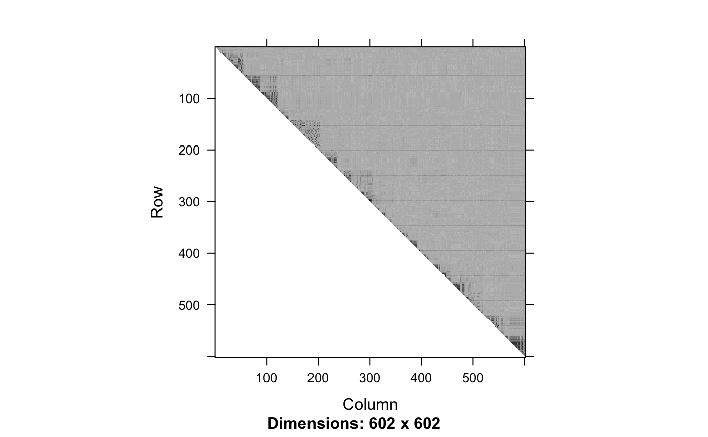
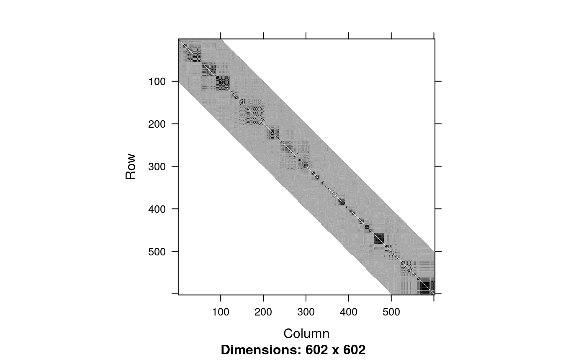

Inferring Linkage Disequilibrium blocks from genotypes
Shubham Chaturvedi, Pierre Neuvial, Nathalie Villa-Vialaneix
2020-06-15
Source:vignettes/snpClust.Rmd
snpClust.Rmd# this vignette is not created if snpStats is not installed if (!require("snpStats")) { knitr::opts_chunk$set(eval = FALSE) }
## Loading required package: snpStats## Loading required package: survival## Loading required package: MatrixIntroduction
In this vignette we demonstrate the use of snpClust function in the adjclust package. snpClust performs adjacency-constrained hierarchical clustering of single nucleotide polymorphisms (SNPs), where the similarity between SNPs is defined by linkage disequilibrium (LD).
This function implements the algorithm described in the third chapter of [2]. It is an extension of the algorithm described in [3]. Denoting by \(p\) the number of SNPs to cluster and assuming that the similarity between SNPs whose indices are more distant than \(h\), its time complexity is \(O(p (\log(p) + h))\), and its space complexity is \(O(hp)\).
library("adjclust")
Loading and displaying genotype data
The begining of this vignette closely follows the “LD vignette” of the SnpStats package [1]. First, we load genotype data.
We focus on the ceph.1mb data.
geno <- ceph.1mb[, -316] ## drop one SNP leading to one missing LD value p <- ncol(geno) nSamples <- nrow(geno) geno
## A SnpMatrix with 90 rows and 602 columns
## Row names: NA06985 ... NA12892
## Col names: rs5993821 ... rs5747302These data are drawn from the International HapMap Project and concern 602 SNPs1 over a 1Mb region of chromosome 22 in sample of 90 Europeans.
We can compute and display the LD between these SNPs.

Adjacency-constrained Hierarchical Agglomerative Clustering
The snpClust function can handle genotype data as an input:
fit <- snpClust(geno, stats = "R.squared")
## Warning in run.snpClust(x, h = h, stats = stats): Forcing the LD similarity to
## be smaller than or equal to 1## Note: 135 merges with non increasing heights.Note that due to numerical errors in the LD estimation, some of the estimated LD values may be slightly larger than 1. These values are rounded to 1 internally.
The above figure suggests that the LD signal is concentrated close to the diagonal. We can focus on a diagonal band with the bandwidth parameter h:
fitH <- snpClust(geno, h = 100, stats = "R.squared")
## Warning in run.snpClust(x, h = h, stats = stats): Forcing the LD similarity to
## be smaller than or equal to 1## Note: 133 merges with non increasing heights.fitH##
## Call:
## run.adjclust(mat = mat, type = type, h = h)
##
## Cluster method : snpClust
## Number of objects: 602Output
The output of the snpClust is of class chac. In particular, it can be plotted as a dendrogram silently relying on the function plot.dendrogram:
plot(fitH, type = "rectangle", leaflab = "perpendicular")
## Warning in plot.chac(fitH, type = "rectangle", leaflab = "perpendicular"):
## Detected reversals in dendrogram: mode = 'corrected', 'within-disp' or 'total-disp' might be more relevant.
Moreover, the output contains an element named merge which describes the successive merges of the clustering, and an element gains which gives the improvement in the criterion optimized by the clustering at each successive merge.
## [,1] [,2]
## [1,] -1 -2
## [2,] -255 -256
## [3,] -488 -489
## [4,] -487 3
## [5,] -486 4
## [6,] -234 -235Other types of input
In this section we show how the snpClust function can also be applied directly to LD values.
h <- 100 ld.ceph <- snpStats::ld(geno, stats = "R.squared", depth = h, symmetric = TRUE) image(ld.ceph, lwd = 0)

Note that we have forced the snpStats::ld function to return a symmetric matrix. We can apply snpClust directly to this LD matrix (of class Matrix::dsCMatrix):
fitL <- snpClust(ld.ceph, h)
## Note: forcing the diagonal of the LD similarity matrix to be 1## Warning in run.snpClust(x, h = h, stats = stats): Forcing the LD similarity to
## be smaller than or equal to 1## Note: 133 merges with non increasing heights.snpClust also handles inputs of class base::matrix:
gmat <- as(geno, "matrix") fitM <- snpClust(geno, h, stats = "R.squared")
## Note: 133 merges with non increasing heights.References
[1] Clayton D. (2015). snpStats: SnpMatrix and XSnpMatrix classes and methods. R package version 1.20.0
[2] Dehman A. (2015). Spatial clustering of linkage disequilibrium blocks for genome-wide association studies. Phd Thesis, Université Paris Saclay.
[3] Dehman A., Ambroise C., Neuvial P. (2015). Performance of a blockwise approach in variable selection using linkage disequilibrium information. BMC Bioinformatics, 16, 148.
Session information
## R version 4.0.0 alpha (2020-04-05 r78150)
## Platform: x86_64-apple-darwin17.0 (64-bit)
## Running under: macOS Mojave 10.14.6
##
## Matrix products: default
## BLAS: /Library/Frameworks/R.framework/Versions/4.0/Resources/lib/libRblas.dylib
## LAPACK: /Library/Frameworks/R.framework/Versions/4.0/Resources/lib/libRlapack.dylib
##
## locale:
## [1] en_US.UTF-8/fr_FR.UTF-8/en_US.UTF-8/C/en_US.UTF-8/en_US.UTF-8
##
## attached base packages:
## [1] stats graphics grDevices utils datasets methods base
##
## other attached packages:
## [1] matrixStats_0.56.0 adjclust_0.5.99 snpStats_1.38.0 Matrix_1.2-18
## [5] survival_3.1-11
##
## loaded via a namespace (and not attached):
## [1] Rcpp_1.0.4 rstudioapi_0.11 knitr_1.28
## [4] magrittr_1.5 BiocGenerics_0.34.0 zlibbioc_1.34.0
## [7] splines_4.0.0 MASS_7.3-51.5 lattice_0.20-41
## [10] R6_2.4.1 rlang_0.4.5 stringr_1.4.0
## [13] tools_4.0.0 parallel_4.0.0 grid_4.0.0
## [16] capushe_1.1.1 xfun_0.12 htmltools_0.4.0
## [19] yaml_2.2.1 assertthat_0.2.1 digest_0.6.25
## [22] rprojroot_1.3-2 pkgdown_1.5.1 crayon_1.3.4
## [25] fs_1.3.2 memoise_1.1.0 evaluate_0.14
## [28] rmarkdown_2.1 stringi_1.4.6 compiler_4.0.0
## [31] desc_1.2.0 backports_1.1.5We have dropped SNP rs2401075 because it produced a missing value due to the lack of genetic diversity in the considered sample.↩